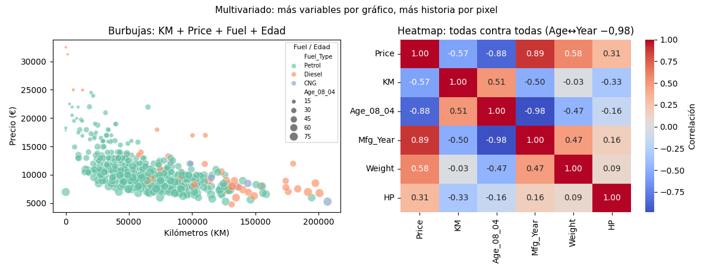

Unidad 3 · Visualización de datos · Lección 0012
Multivariado: 4 variables en un gráfico
Win de hoy: meter KM+Price+Fuel+Edad en un scatter de burbujas y leer la
matriz de correlaciones 6×6 como heatmap (con el −0,98 de edad↔año incluido).
1 · Más de 2 variables: sumar estéticas
Un scatter común muestra 2 variables (x, y). Para la 3ra y 4ta se suman estéticas: color, tamaño, forma o paneles pequeños (facetas). Límite práctico: 4–5 variables por gráfico; más es sopa. La receta de hoy combina dos vistas que se complementan.
2 · Burbujas: KM + Price + Fuel + Edad
Cada auto es una burbuja: posición = KM y Price, color = Fuel_Type,
tamaño = Age_08_04. Lectura guiada: abajo a la derecha viven burbujas grandes (viejos, muchos km,
baratos); arriba a la izquierda, chicas y caras (jóvenes). Los diésel (un color) se amontonan arriba: confirman
visualmente su media alta de la 0006.
sns.scatterplot(data=df.sample(500, random_state=42),
x="KM", y="Price", hue="Fuel_Type", size="Age_08_04")3 · Heatmap de correlaciones: todas contra todas
La matriz de corr() de 6 variables son 36 números: como tabla no se lee, como
heatmap divergente sí.
Tres lecturas: Age↔Mfg_Year = −0,98 (la redundancia de la 0006, ahora rojo furioso),
Price ama al año (+0,89) y odia a la edad (−0,88), y Weight↔HP andan juntas (motores
grandes en autos pesados). Todo el EDA numérico, en un vistazo.
4 · El primo caro: pairplot (y cuándo evitarlo)
El pairplot dibuja todos los cruces de a pares: con 4 variables son 16 paneles, con 10 ya 100. Útil para 3–5 variables, imposible más allá. Por eso el heatmap escala mejor: resume cada par en un número con color. Regla: pairplot para mirar formas, heatmap para barrer muchas variables.
5 · Figura: burbujas + heatmap

Regenerar la figura (mismo resultado versionado en assets/img/toyota/):
python scripts/make_figures.py --only multivariado-burbujas-heatmap6 · Quiz (auto-chequeo inmediato)
7 · Fuente primaria y cierre
Para profundizar (1 fuente): Wilke, Fundamentals of Data Visualization — capítulos de visualización multivariada (clauswilke.com/dataviz, también en RESOURCES.md del curso).
¿Algo no quedó claro? Preguntame al agente: cómo leer una burbuja difícil, cuándo heatmap vs pairplot, o qué estética sumar a tu gráfico. Esa pregunta vale más que releer.